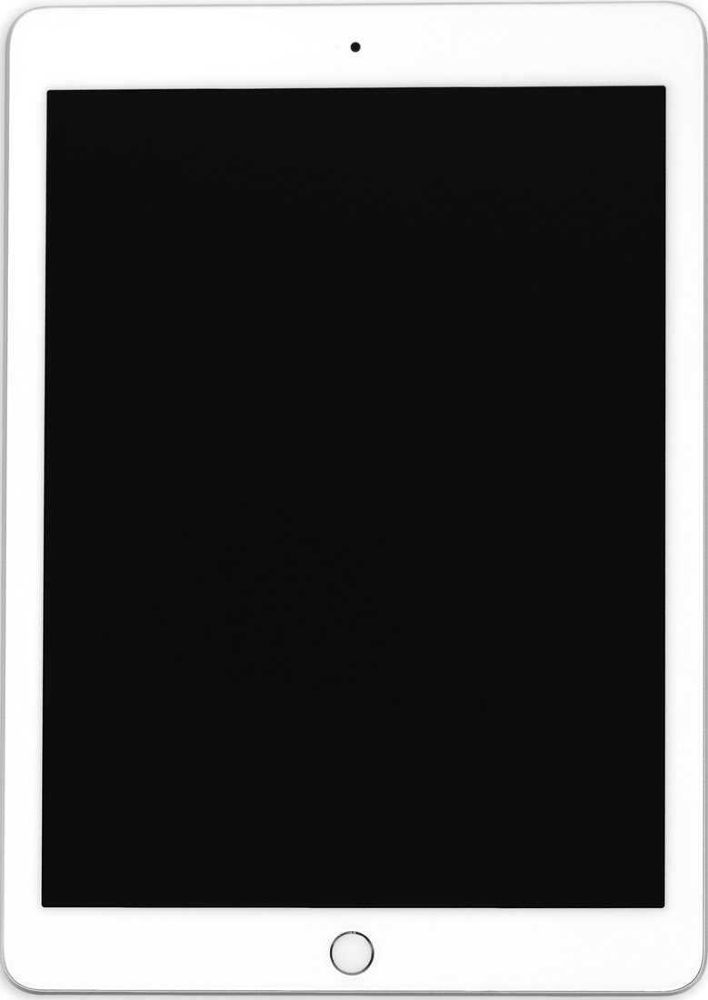

The Autopsy Report · Device #080
The iPad (6th generation, 2018)
The $329 iPad that learned to draw: an A10 Fusion, Apple Pencil support, and a board that barely changed from 2017.
What is this thing?
The sixth-generation iPad is Apple's 9.7-inch tablet announced March 27, 2018 at an education event in Chicago, released the same week starting at $329. Wikipedia Its headline feature was Apple Pencil support — previously a Pro-only trick — now in the cheapest iPad.
Inside, teardowns found an Apple A10 Fusion (the iPhone 7's chip), 2 GB of RAM, and a board that iFixit described as nearly identical to the 2017 iPad's — the upgrade was the chip and the Pencil digitizer, not a redesign. iFixit teardown AppleInsider
Not yet on our bench
This device is not on our bench. We don't own one, we haven't opened one, and we haven't powered one on. Everything on this page comes from public records: government filings, published teardowns by repair shops and journalists, and manufacturer documents. That's a legitimate way to learn a device's story — and it's also a limited one. There are no BareBoard photos, measurements, boot logs, or firmware notes here, because we haven't earned them yet.
When a unit of the iPad (6th gen) does reach our bench, this page gets a second edition: our own board photography, our own measurements, and whatever the device tells us when it wakes up. Until then, what follows is the public record, carefully sourced, with the gaps labeled as gaps.
A short history
- March 27, 2018Apple announces the sixth-generation iPad at its Chicago education event. Wikipedia
- March 27, 2018The FCC grants three original-equipment authorizations for model A1893 (FCC ID BCGA1893) — announcement day again. FCC filing
- April 3, 2018iFixit's teardown lands: A10 Fusion, 2 GB RAM, Pencil support — and a 2-out-of-10 repairability score. iFixit teardown · MacRumors
- May 1, 2018The FCC filing's internal photos, external photos, and user manuals become public. FCC filing
The outside
A 9.7-inch, 2048×1536 Retina display in the classic aluminum unibody — visually almost indistinguishable from the 2017 iPad, which is exactly why the photo below carries an honest caption. Wikipedia Home button with Touch ID, Lightning port, headphone jack — the last of the classic iPad formula.
No freely licensed photo of the 2018 model specifically exists on Wikimedia Commons; the image below is the visually identical 2017 chassis, labeled as such.

The board
iFixit's teardown describes a single logic board with the A10 Fusion, Toshiba flash, and the USI wireless module, under a display assembly that — like every iPad of the era — is glued down over the top. iFixit teardown MacRumors' teardown summary notes the few changes beyond the A10 and Pencil support. MacRumors
The FCC's internal photos (public since May 2018) show the same single-board layout with shielded radio sections. FCC filing We have not photographed the board ourselves.
Under the microscope: the chips
What's on the board, what each part does, and how sure we are — all from public teardown records, since we haven't seen the board ourselves. Likely means the public hardware record agrees on it. Confirmed is reserved for primary sources we could verify directly, like the government's own filing. Every row links somewhere you can read more.
| Chip | What it does | How we know | Dig deeper |
|---|---|---|---|
| Apple A10 Fusion APL1W24 | The main processor — quad-core, from the iPhone 7. | Likely Identified by iFixit; Apple’s own marking. | iFixit teardown |
| 2 GB Micron LPDDR4 | Working memory, stacked under the SoC. | Likely Identified in teardown chip lists. | MacRumors |
| Toshiba TSB3236LX3536TWNB1 32 GB flash |
Storage for iOS and user data. | Likely Read off the board by iFixit. | iFixit teardown |
| USI 339S00448 | The Wi-Fi/Bluetooth module. | Likely Identified in teardown chip lists. | AppleInsider |
| 2× Broadcom BCM15900B0 | Touchscreen controllers (a pair, for the 9.7-inch panel). | Likely Identified in teardown chip lists. | iFixit teardown |
| NXP PN80V | NFC controller. | Likely Identified in teardown chip lists. | MacRumors |
| Cirrus Logic CS42L83A | Audio codec. | Likely Identified in teardown chip lists. | iFixit teardown |
| 2× Maxim MAX98357B | Audio amplifiers for the stereo speakers. | Likely Identified in teardown chip lists. | iFixit teardown |
| A1484 battery 32.9 Wh |
The battery pack. | Likely Marking read in iFixit’s teardown. | iFixit teardown |
Not in the public chip lists: the power-management IC and the display driver. As with every Apple tablet, the custom-marked parts have no public datasheets — that documentation gap is the industry's, not the research's.
The government's file on this device
The 2018 iPad went through the FCC as BCGA1893, registered to Apple Inc. for Tablet Device model A1893. Three original-equipment applications were granted on March 27, 2018. FCC filing Confirmed — straight from the filing index.
The filing lists Bluetooth-range entries around 54–59 mW, 2.4 GHz Wi-Fi at 413 mW, and 5 GHz bands between roughly 89 and 100 mW. Internal photos, external photos, and user manuals became public on May 1, 2018; test reports and RF-exposure material were public from grant day. FCC filing
The Wi-Fi/Bluetooth schematics and some operational material show no public availability — confidential, as usual for Apple filings.
Debug and service modes
Apple publicly documents recovery mode for iPads that won't update or restore — the support article walks through connecting to a computer and restoring the device. Apple Support Below that sits DFU mode, a deeper restore state described in public repair references.
We have not put any iPad into either mode. They are listed here because they are publicly documented — not because we've used them.
Our posture on all of the above: we describe what's publicly documented, and we don't go knocking. No device has been probed, reflashed, or opened on our bench — there is nothing here but reading.
What public records show
It's a 2017 iPad with a new brain. The teardown consensus: same chassis, same battery class, same board layout — the A10 Fusion and the Pencil digitizer are the upgrade. Apple sold a faster chip and a new trick at the same $329. AppleInsider
Repairability went nowhere. iFixit scored it 2 out of 10 — glued display, glued battery, the standard Apple tablet tax on repair. The $329 price didn't buy fixability. iFixit teardown
What we haven't done
- We have not opened a 2018 iPad, photographed its board, or measured anything on it.
- We have not captured a boot log or entered recovery/DFU mode on this model.
- We have not verified the power-management IC or display driver, which the public teardowns don't name.
By the numbers
- Model: iPad (6th generation), A1893 (Wi-Fi) FCC filing
- FCC ID: BCGA1893 FCC filing
- Main chip: Apple A10 Fusion (APL1W24) iFixit teardown
- Memory: 2 GB LPDDR4 MacRumors
- Display: 9.7 in, 2048×1536, Apple Pencil support Wikipedia
- Storage: 32/128 GB (teardown unit: 32 GB Toshiba) Wikipedia iFixit teardown
- Battery: 32.9 Wh (A1484) iFixit teardown
- Released: March 2018, from $329 Wikipedia
- Wireless: Wi-Fi a/b/g/n/ac, Bluetooth 4.2 Wikipedia
- Repairability: 2/10 iFixit teardown
Words to know
Every term this page uses, in plain English. No prior knowledge required.
- System on a chip (SoC)
- The whole computer — processor, graphics, and memory interfaces — on one piece of silicon. The A10 Fusion is Apple's.
- Retina display
- Apple's term for a screen dense enough that individual pixels are hard to see — 264 pixels per inch here.
- FCC ID
- The ID the FCC assigns to each approved wireless product. Punch it into fccid.io and the whole public filing comes up.
- Recovery mode
- A state Apple documents for restoring an iPad whose software won't boot — it reloads the OS from a computer.
- DFU mode
- Device Firmware Update: an even deeper restore state that talks to the bootloader before iOS loads.
- Repairability score
- iFixit's 1-to-10 rating of how fixable a device is. 10 is a dream; 1 is glued shut.
Sources & confidence
- Chip identities: iFixit's 2018 teardown, MacRumors' teardown summary, and AppleInsider's teardown report. Marked Likely throughout — we haven't seen the board ourselves.
- FCC ID, grantee, grant dates, confidentiality dates, and transmit powers: the FCC filing index for BCGA1893 — a primary source. High confidence.
- Release date, price, and Pencil support: the device's encyclopedia entry, cross-checked against launch coverage.
- Recovery mode: Apple's own support article.
- The stand-in photo is labeled as a 2017 chassis, not misidentified as a 2018 unit.
- Anything not listed here is unknown until the bench says otherwise. We'll say so, out loud, when that's the case.
Legal note. BareBoard is an educational project. Everything on this page is assembled from public records and freely-licensed photography credited in its caption. We don’t publish, host, or distribute firmware, keys, passwords, or credentials. Product names and trademarks belong to their respective owners and appear here only to identify the hardware. If you believe anything here infringes your rights, contact us and we’ll address it promptly.